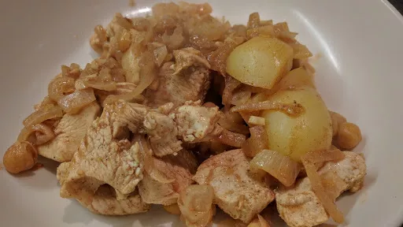

Chicken, chickpea & lemon casserole
35 mins
Serves 2

A low fat main meal that's both delicious and nutritious, and it freezes well.
Ingredients
- 175 g new potatoes, halved
- 1 medium onion, thinly sliced
- 2 slices lemon, chopped
- 2 clove garlic, roughly chopped
- 1 tsp ground cumin
- 1 tsp ground cinnamon
- 450 ml chicken stock
- large skinless, boneless chicken thighs, trimmed of all fat and cut into cubes
- 0.5x 410 g can chickpeas
- handful fresh coriander, chopped
Instructions
- Put the
potatoes175 g
, onion1 medium
, lemon2 slices
and garlic2 clove
into a casserole or heavy saucepan. Sprinkle over the ground spices and season lightly. Toss together then pour over the stock450 ml
. Bring to the boil and simmer for 12 mins or until potatoes175 g
are tender.
- Add the chicken and
chickpeas0.5x 410 g can
, cover the saucepan and simmer gently for a further 10-12 mins or until the chicken is cooked through. Check the seasoning and stir in the corianderhandful
. Serve with steamed green beans or broccoli.
-
kcal
310
-
fat
6 g
-
saturates
1 g
-
carbs
32 g
-
sugar
0 g
-
fibre
4 g
-
protein
34 g
-
salt
1.4 g
www.bbcgoodfood.com
Short Link
Long Link